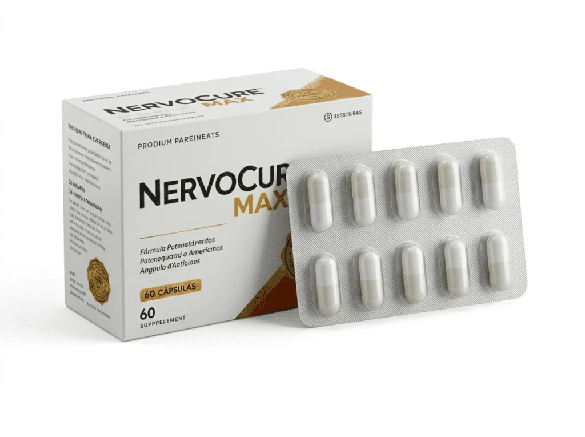

CONTEÚDO PATROCINADO — Publicidade sobre um produto de terceiros
Saúde em Foco
Publicado hoje·Atualizado hoje·4 min de leitura·CF Por Camila Ferreira, Redação de Saúde
Sistema Nervoso
O que pode estar por trás do formigamento, da queimação e da dormência nos pés e nas mãos? Especialistas explicam por que esses sintomas merecem atenção.
Muitas pessoas convivem diariamente com desconfortos como formigamento, rigidez e sensação de agulhadas sem entender o que pode estar causando esses sintomas. Conheça os fatores que podem estar envolvidos e por que alguns nutrientes têm sido estudados pelo seu papel na saúde do sistema nervoso.
Ilustração representando o desconforto nervoso e sua relação com o sistema nervoso periférico.
Você já sentiu aquela sensação de formigamento, queimação ou dormência que aparece sem aviso e atrapalha tarefas simples do dia a dia?
Para algumas pessoas, esses episódios são ocasionais. Para outras, tornam-se frequentes e podem interferir no conforto ao caminhar, descansar ou realizar atividades rotineiras.
Embora existam diferentes causas possíveis para esses sintomas, especialistas destacam que eles não devem ser ignorados quando persistem. Compreender o que pode estar acontecendo é um passo importante para conversar com um profissional de saúde e conhecer estratégias que auxiliem no cuidado com o sistema nervoso.
Neste artigo, você vai entender por que esses desconfortos podem surgir, quais fatores têm sido estudados pela ciência e como alguns nutrientes vêm sendo investigados por seu papel na manutenção da saúde nervosa.
O que você vai descobrir neste artigo
Por que as dores nervosas afetam tantas pessoas e como identificá-las.
A relação entre inflamação e o desconforto sentido nos nervos.
Como uma abordagem nutricional tem sido estudada como suporte ao sistema nervoso.
Os nutrientes mais associados à saúde nervosa na literatura científica.
Uma nova perspectiva para quem convive com esse desconforto no dia a dia.
O sistema nervoso funciona como uma grande rede de comunicação do corpo. É por meio dele que sinais são enviados entre o cérebro, a medula espinhal e diferentes regiões do organismo.
Quando essa comunicação ocorre normalmente, movimentos, sensações e respostas do corpo acontecem de forma coordenada. Porém, diversos fatores — como o envelhecimento, algumas condições de saúde e deficiências nutricionais — podem afetar esse funcionamento.
Em alguns casos, essas alterações estão associadas ao aparecimento de sintomas como formigamento, dormência, sensação de queimação ou desconforto nas extremidades.
Os nervos periféricos, responsáveis por levar essas informações para braços, mãos, pernas e pés, têm sido amplamente estudados justamente por seu papel nesses sintomas.
Ilustração comparando um nervo saudável e um nervo com a bainha de mielina comprometida.
O papel da inflamação
A inflamação crônica e o desgaste da bainha de mielina — a camada que protege os nervos — estão entre os fatores mais estudados nesse processo. É como o isolamento de um fio elétrico: quando se danifica, o sinal falha, e é aí que aparecem os sintomas. Fatores como o envelhecimento natural e certas deficiências nutricionais podem acelerar esse desgaste.
O que é a bainha de mielina?
É a camada que envolve e protege os nervos, funcionando de forma parecida com o isolamento de um fio elétrico. Quando está íntegra, os impulsos nervosos são transmitidos de forma eficiente pelo corpo.
Nutrientes estudados para a saúde nervosa
A ciência da nutrição tem se debruçado sobre alguns compostos com papel relevante na manutenção do sistema nervoso. Conheça os principais:
Ácido Alfa-Lipoico
Antioxidante estudado por seu possível papel na proteção celular dos nervos.
Complexo B
Vitaminas associadas à formação e manutenção da bainha de mielina.
Magnésio
Mineral que contribui para a função nervosa e muscular normal.
Entender o que está por trás do desconforto nervoso é o primeiro passo para buscar mais qualidade de vida no dia a dia.
Como surgiu essa combinação
Nos últimos anos, pesquisadores passaram a estudar com mais atenção o papel de determinados nutrientes na manutenção da saúde do sistema nervoso. Em vez de analisar apenas ingredientes isolados, diferentes estudos investigaram como combinações de compostos poderiam oferecer suporte nutricional de forma complementar.
Foi com base nessa linha de pesquisa que surgiu a proposta do NervoCure Max: reunir, em uma única fórmula, nutrientes amplamente estudados por sua participação no funcionamento normal do sistema nervoso e na proteção das células contra o estresse oxidativo.

NervoCure Max
Com base no conhecimento científico disponível sobre nutrientes relacionados à saúde do sistema nervoso, foi desenvolvido o NervoCure Max, um suplemento alimentar que reúne ingredientes selecionados para complementar a ingestão de nutrientes associados à manutenção da função nervosa.
Sua fórmula combina ativos reconhecidos por seu papel nutricional e é produzida seguindo boas práticas de fabricação.
Como qualquer suplemento alimentar, seu uso deve seguir as orientações da embalagem e, em caso de dúvidas ou condições de saúde preexistentes, é recomendável buscar orientação de um profissional de saúde.
O produto é formulado com ingredientes de origem natural. Como qualquer suplemento alimentar, recomendamos consultar um médico antes de iniciar o uso, principalmente se você tiver alguma condição de saúde pré-existente.
Em quanto tempo posso perceber diferença? +
A percepção de resultados varia de pessoa para pessoa, de acordo com fatores individuais como rotina, alimentação e regularidade no uso.
Posso usar junto com outros medicamentos? +
Consulte seu médico ou farmacêutico antes de associar qualquer suplemento a medicamentos em uso, para avaliar possíveis interações.
Pessoas com diabetes podem usar? +
Pessoas com diabetes ou outras condições crônicas devem procurar orientação médica antes de iniciar o uso de qualquer suplemento alimentar.
Quem não deve utilizar o produto? +
Gestantes, lactantes, crianças e pessoas com alergia a algum dos componentes da fórmula não devem utilizar o produto sem orientação médica. Pessoas com condições de saúde pré-existentes também devem consultar um profissional antes do uso.
Como conservar corretamente? +
Mantenha o produto em local seco e fresco, ao abrigo da luz solar direta, e fora do alcance de crianças, conforme as instruções da embalagem.
Onde encontrar a versão oficial do produto? +
Para garantir a autenticidade e a qualidade do produto, a compra deve ser feita exclusivamente através da página oficial do fabricante, evitando canais não autorizados.
Quer conhecer mais detalhes sobre o NervoCure Max?
Na página oficial, você encontra informações completas sobre a composição, orientações de uso, recomendações importantes e demais detalhes para avaliar se o produto faz sentido para a sua rotina.
Clique no botão abaixo para acessar as informações oficiais diretamente com o fabricante.